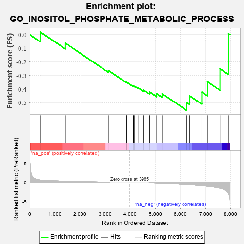
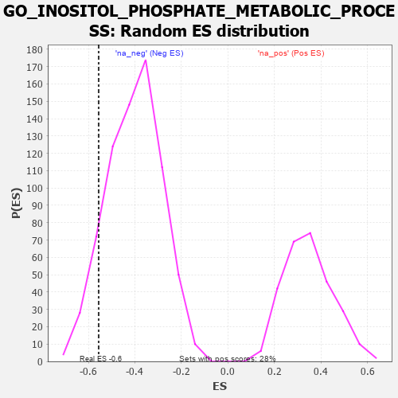

| | | Dataset | 7d |
| Phenotype | NoPhenotypeAvailable |
| Upregulated in class | na_neg |
| GeneSet | GO_INOSITOL_PHOSPHATE_METABOLIC_PROCESS |
| Enrichment Score (ES) | -0.55570525 |
| Normalized Enrichment Score (NES) | -1.3772079 |
| Nominal p-value | 0.10249308 |
| FDR q-value | 0.36850652 |
| FWER p-Value | 1.0 |
Table: GSEA Results Summary

Fig 1: Enrichment plot: GO_INOSITOL_PHOSPHATE_METABOLIC_PROCESS
Profile of the Running ES Score & Positions of GeneSet Members on the Rank Ordered List
| PROBE | GENE SYMBOL | GENE_TITLE | RANK IN GENE LIST | RANK METRIC SCORE | RUNNING ES | CORE ENRICHMENT | | 1 | OCRL | | | 408 | 0.691 | 0.0218 | No |
| 2 | P2RY1 | | | 1416 | 0.407 | -0.0617 | No |
| 3 | MTMR2 | | | 3126 | 0.133 | -0.2625 | No |
| 4 | IPMK | | | 3846 | 0.021 | -0.3507 | No |
| 5 | ITPK1 | | | 3851 | 0.020 | -0.3490 | No |
| 6 | IMPA1 | | | 4112 | -0.024 | -0.3791 | No |
| 7 | PLCE1 | | | 4127 | -0.028 | -0.3779 | No |
| 8 | SYNJ1 | | | 4173 | -0.038 | -0.3796 | No |
| 9 | IPPK | | | 4306 | -0.060 | -0.3898 | No |
| 10 | BPNT1 | | | 4530 | -0.101 | -0.4071 | No |
| 11 | PLCG1 | | | 4770 | -0.151 | -0.4212 | No |
| 12 | NUDT3 | | | 5050 | -0.209 | -0.4342 | No |
| 13 | PTEN | | | 5262 | -0.261 | -0.4331 | No |
| 14 | MIOX | | | 6238 | -0.549 | -0.4976 | Yes |
| 15 | GALR2 | | | 6355 | -0.599 | -0.4488 | Yes |
| 16 | PTH1R | | | 6845 | -0.839 | -0.4215 | Yes |
| 17 | PLCB4 | | | 7069 | -0.977 | -0.3461 | Yes |
| 18 | CALM1 | | | 7567 | -1.499 | -0.2500 | Yes |
| 19 | PLCB1 | | | 7904 | -2.841 | 0.0084 | Yes |
Table: GSEA details [plain text format]

Fig 2: GO_INOSITOL_PHOSPHATE_METABOLIC_PROCESS: Random ES distribution
Gene set null distribution of ES for GO_INOSITOL_PHOSPHATE_METABOLIC_PROCESS